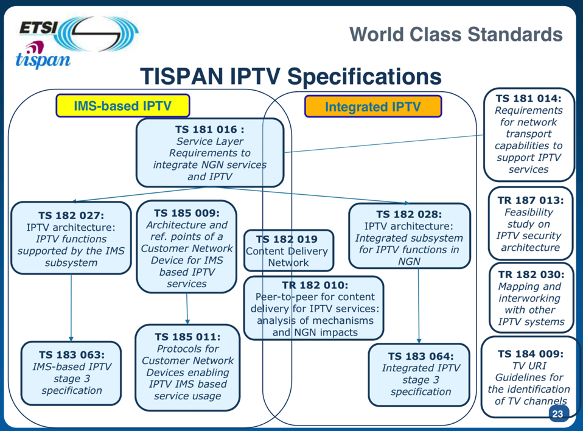
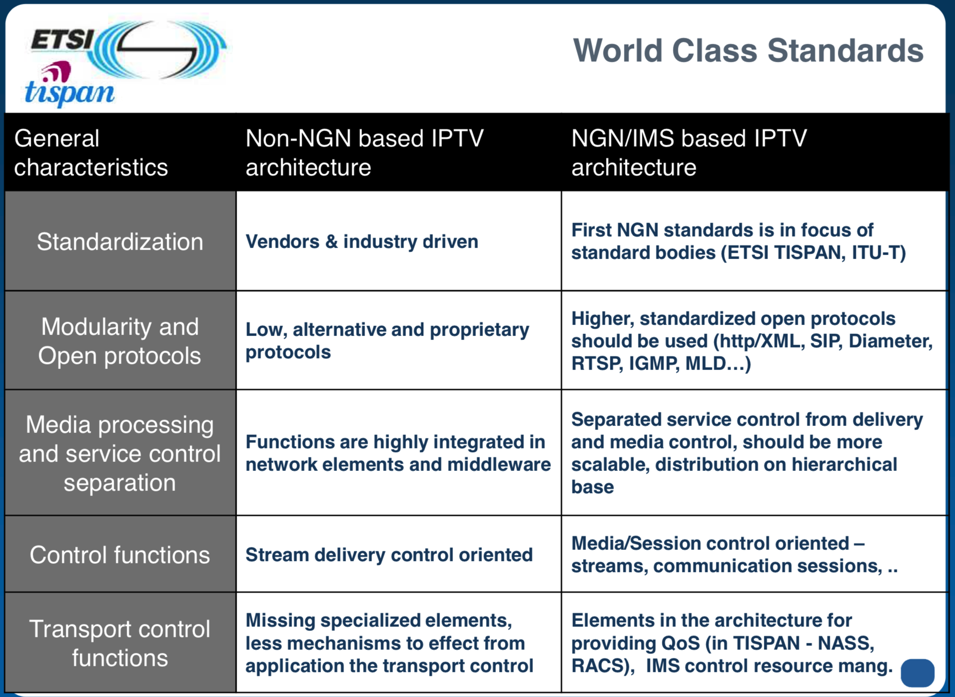
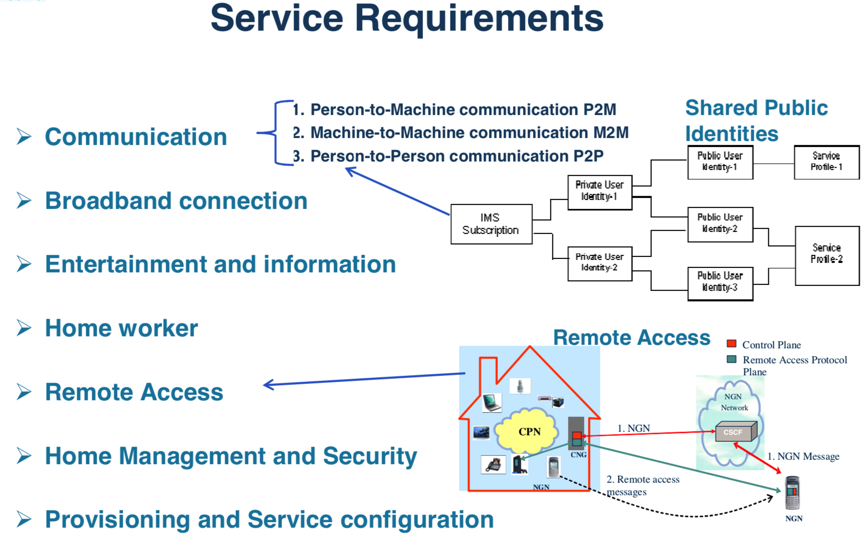
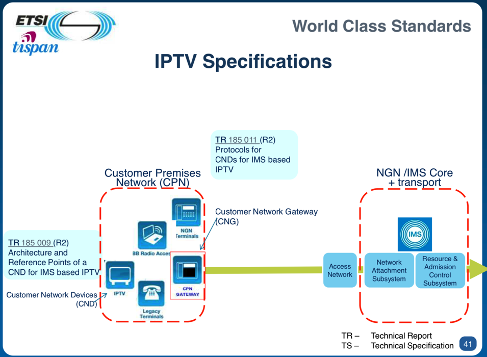
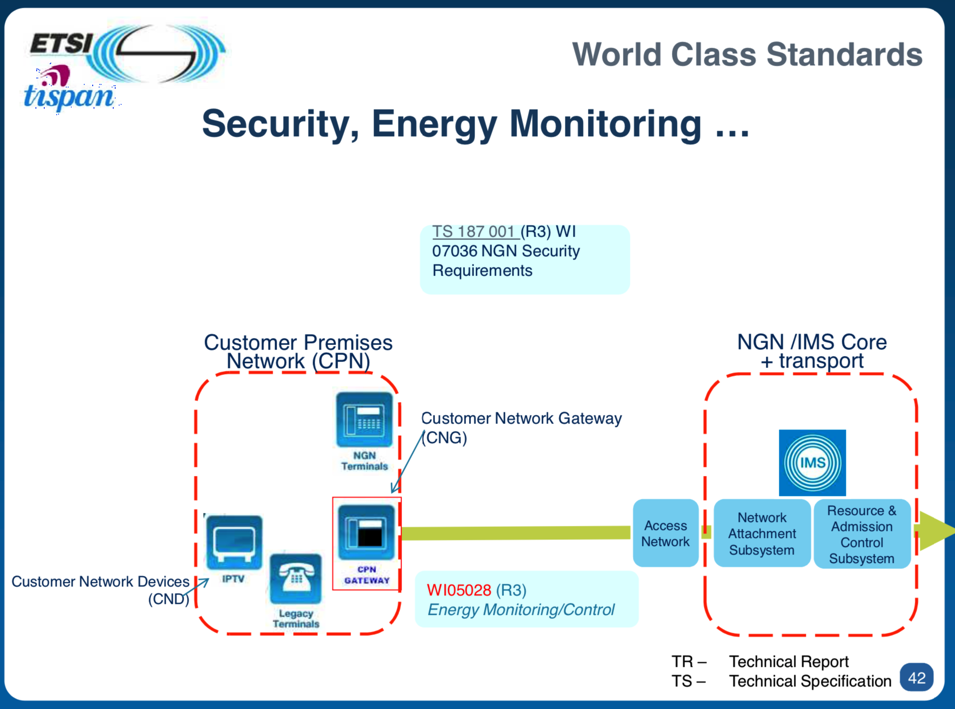

TISPAN
此处整理TISPAN相关内容。
TISPAN=tispan- 一句话简介：
ETSI下的一个工作组- 是NGN的具体实现方案
- the NGN global solution
- 往往也叫：
TISPAN NGN
- 是NGN的具体实现方案
- 起源
- 2003年9月成立
- 合并自
- SPAN=Services and Protocols for Advanced Networks
- 一个合并后的工作小组
- 合并自
- SPS=Services, Protocols & Switching
- NA=Network Aspects
- 合并自
- 主要负责EURO-ISDN
- 一个合并后的工作小组
- TIPHON=Telecommunications and Internet Protocol Harmonization Over Networks
- 1997年成立的
- 一个ETSI的项目
- 最开始研究VoIP
- 后来扩展到基于IP传输任何电信（包括MM=Multimedia=多媒体）数据
- SPAN=Services and Protocols for Advanced Networks
- （TISPAN NGN ）架构=architecture
- 总体架构
- 架构含义解释
- 最初
- NASS子系统 负责接入：地址管理、授权和认证等
- RACS子系统：负责会话管理和控制
- PSTN Emulation=PSTN仿真：支持非IMS的旧有系统
- 最初
- 总体架构
- 相关内容
- 生态和协议
- 概述
- 概述
- IPTV方面
- IPTV协议生态
- IPTV相关协议
- 
- IMS-based IPTV vs Integrated IPTV
- Specification协议规范
- Protocols Used
- 特点Characteristic
- 
- Specification协议规范
- IPTV协议生态
- 测试方面
- Home Network相关
- Home Networking Security
- Service Requirements
- 
- 架构和协议
- 说明
- TISPAN sees Home Networks as an IMS NGN end-point
- Architecture Specifications
- IPTV Specifications
- 
- Security, Energy Monitoring
- 
- TV URI
- 说明
- Home Networking Details详情
- Home Networking Security
- 生态和协议
- 一句话简介：


- 总体内容和架构
- 文字版
- Service Layer Model
- Subsystems
- Core
- IMS= IP Multimedia Subsystem
- Other
- PES=PSTN/ISDN Emulation subsystem
- IPTV Subsystem
- PES=PSTN/ISDN Emulation subsystem
- Core
- Common components
- UPSF=User Profile Server Function
- SLF=Subscription Locator Function
- ASF=Application Server Function
- IWF=Interworking Function
- Subsystems
- Transport layer
- Transport control sublayer
- NASS=Network Attachment Subsystem
- RACS=Resource and Admission Control Subsystem
- Transport processing function
- BGF=Border Gateway Function
- RCEF=Resource Control Enforcement Function
- ARF=Access Relay Function
- MGF=Media Gateway Function
- MRFP=Media Resource Function Processor
- SGF=Signalling Gateway Function
- AMF=Access Management Function
- BTF=Basic Transport Function
- EFF=Elementary Forwarding Function
- ECF=Elementary Control Function
- Transport control sublayer
- UE=User Equipment
- Service Layer Model
- 图
- TISPAN NGN overall architecture
- Example architecture with xDSL access
- Transport processing functions overview
- TISPAN R1参考模型
- TISPAN NGN overall architecture
- 文字版
- TISPAN 不同模块内容
- Distributed subsystems
- Access and aggregation segments
- Common components overview
- Charging and Data Collection Functions
- Network interconnection at transfer level
User Equipment=UE- 说明
UE=User EquipmentTE=Terminal EquipmentCPN=Customer Premises NetworkCND=Customer Network DevicesCNG=Customer Network GatewayR-MGF=Residential MGF
- 说明
- Authentication
- NGN Authentication Levels
- NGN Authentication Levels
- Distributed subsystems